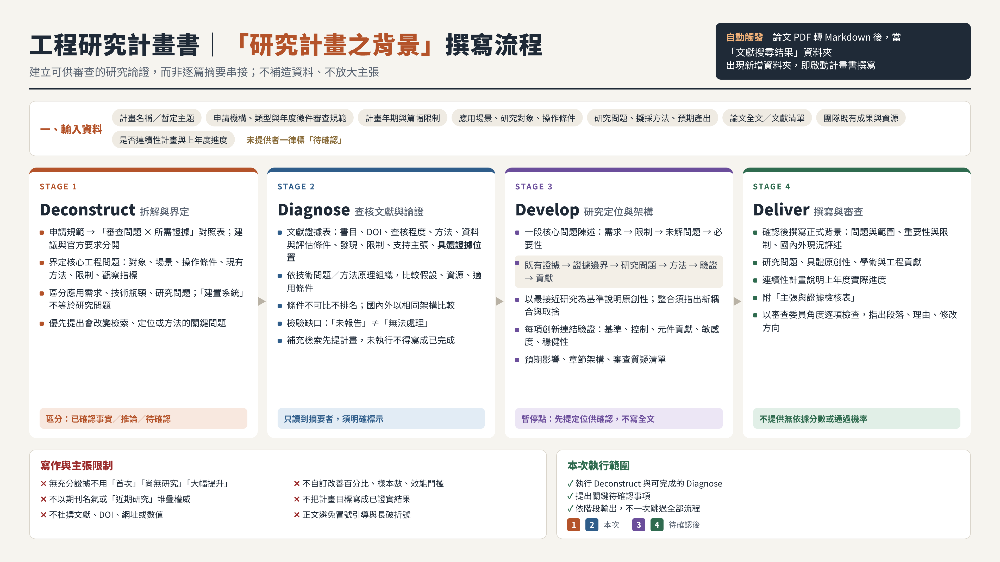

3-1教師 AI 素養教案：以 AI 備課，同時學習 AI 素養
第三部分從一個完整的教學設計開始。教師 AI 素養教案是一份以大學教師為對象的教學設計手冊，教師在其中同時扮演兩個角色：AI 素養的學習者，以及教案的設計者。手冊以教育部《教育與研究之生成式人工智慧應用指引》為核心教材，引導教師分析指引、設定學習目標、診斷起點、完成活動，最終產出一份可教、可評量、可驗證的教案[1]。
核心流程分為七個步驟：A1 教材分析、A2 學習者情境、A3 學習目標、A4 課前診斷、A5 活動與證據、A6 整合教案、A7 品質檢核；進階延伸則包括 A8 Skill 封裝與 A9 Agentic Workflow[1]。手冊對分工有清楚界定：AI 可以分析文件、辨識概念、草擬目標與評量、檢查對齊，並建議「通過」或「需要修改」；但概念的正確性、最終目標、活動與評量是否有效、證據是否充分、責任如何分配，以及最後的品質判定，都由教師決定。每一步也都必須留下證據，而證據不是 AI 的產出本身；例如 A1 的學習證據，是教師對每個概念「保留、修改或刪除」的決定與理由[1]。
A4 課前診斷的第一題，正好呼應第二部分的內容：給教師一段模糊的提示詞「請根據這份PDF幫我設計一堂AI素養課」，請教師判斷應如何回應並說明理由，觀察重點是能否注意到來源、學習者情境、目標、時間與輸出要求[1]。這正是 D1 拆解與 D2 診斷所要培養的能力。
手冊最後歸納出五項不可破壞的核心原則：教材必須可追溯；每一步只有一個主要責任；能力必須留下證據；AI 協助，人負責；先完成核心教案，再談自動化[1]。需要留意的是，手冊 A3 採用的是 AI Fluency 4D（Delegation、Description、Discernment、Diligence），與第二部分的提示詞 4D 流程名稱相同、內容不同。
3-2說人話：以 Agent 安裝 Skill，進行修改前後對照
AI 生成的公告與講義，常帶有一眼就能辨識的「AI 味」。本節介紹開源 Skill「speak-human-tw」（github.com/Raymondhou0917/speak-human-tw），並以 Agent 完成從產生原稿、安裝 Skill、修改到對照的完整流程。
⚠ 使用工具：本實習只能使用 Agent
本實習須使用 Claude Code 或 Codex，不能使用 ChatGPT 或 Claude 的網頁版。網頁版無法把 Skill 安裝到電腦中，也無法直接存檔與產生對照檔，因此做不出修改前後的比較；作者的安裝指南也只提供 Agent 的安裝方式[2]。
步驟 ①：先產生修改前的原稿（尚未安裝 Skill）
原稿必須在安裝 Skill 之前產生，比較才公平。開啟 Agent，送出下方提示詞，請它撰寫一則考試公告；【】內為預設值，可直接使用。
請在目前資料夾建立一個新資料夾「說人話實習」，在裡面寫一則校內考試公告，存成「公告-before.md」。
內容：【期中考】考試公告，科目【計算機概論】，日期【11 月 25 日（三）】，時間【10:10–12:00】，地點【電機館 101 教室】，對象【修課學生】，約 200 字。
步驟 ②：辨識 AI 痕跡
開啟「公告-before.md」，找出一看就是 AI 寫的句子。常見痕跡包括：「在當今瞬息萬變的時代」這類大帽子開場；「總的來說」「綜上所述」這類罐頭結尾；「不僅……更……」句型；硬湊的「首先、其次、最後」；以及「視頻、質量、信息」等中國用語與半形標點[2]。
步驟 ③：請 Agent 安裝 Skill
speak-human-tw 由雷蒙（Raymond Hou）以 MIT 授權開源，專案網址為 https://github.com/Raymondhou0917/speak-human-tw。它能辨識 38 種 AI 寫作痕跡，並把中國用語與半形標點改為台灣用法。它不會直接改寫，而是先列出清單，說明原句、修改理由與建議改法，等使用者勾選後才動筆；作者未提供的經歷或立場，它不會代為編造，只會標示「需作者補充」[2]。依作者的安裝指南（Claude Code、Codex），安裝不需要自己輸入指令，直接請 Agent 處理即可[3]。
Claude Code（作者原文）：
幫我安裝這個 skill：https://github.com/Raymondhou0917/speak-human-tw
clone 到 ~/.claude/skills/speak-human-tw
Codex（依作者 Codex 指南的路徑）：
幫我安裝這個 skill：https://github.com/Raymondhou0917/speak-human-tw
clone 到 ~/.codex/skills/speak-human-tw
安裝完成後須開啟新的對話（Claude Code 也可以重新啟動），Skill 才會被讀取[3, 4]。
步驟 ④：先看清單，再決定修改
幫我校對「說人話實習/公告-before.md」，走一遍去 AI 味流程，先列清單給我看。
Skill 會先判斷文字情境、鎖定不能更動的內容（例如日期、時間與地點），再逐條列出建議；閱讀清單後回覆要修改的項目，例如「都改」或「只改第 3 條」[2, 3]。
步驟 ⑤：另存修改後版本，原稿不動
都改。改好的版本另存成「說人話實習/公告-after.md」，「公告-before.md」不要動。
步驟 ⑥：產生修改前後對照網頁
請把「公告-before.md」和「公告-after.md」做成一個左右對照的 HTML 網頁，存成「說人話實習/對照.html」，做完幫我打開。
每一處修改都標出：原句／改後／屬於哪一類 AI 痕跡。
最後檢查日期、時間、地點、科目、人名、數字是否一字沒變，把檢查結果寫在網頁最下面。
與 1-4 相比，這次不再需要自己複製、貼上與修改：Agent 會自行讀取 Skill、存檔並產生對照。同一套規則可以是一段提示詞、一個 Skill，也可以是 Agent 工作流程中的一個環節，差別只在自動化程度[2]。這個工具的用途是潤飾教師自己的文字，而不是協助學生規避 AI 偵測，原作者也明確說明這一點[2]。
從第二部分的角度看，說人話同樣遵循提示詞構建心法：先判斷情境、鎖定不能更動的內容，屬於限制；「先列清單、等待回覆」屬於格式；最後檢查日期與地點一字未變，則是交付前的品質檢查。公告與講義可以這樣潤飾，整份教材也可以借助 AI 完成，下一節即是一個實例。
3-3成果介紹：電子學補充教材（以電子學(一)為例）
電子學補充教材透過範例、模擬與練習輔助電子學的學習，內容包括[5]：
- 第 1 章 訊號與放大器：以降噪耳機說明訊號，搭配示波器觀察訊號疊加，並說明被動電阻為何無法構成放大器
- 第 2 章 運算放大器：以感測器訊號放大為例，說明輸入、放大倍率與輸出的關係
- 第 3 章 二極體：PN 二極體模擬器可連續調整偏壓，觀察空乏區寬度、門檻電壓與 I-V 特性曲線的變化，並附觀念測驗
- 第 9 章 頻率響應：極點與零點探索工具，呈現極點、零點位於左右半平面時對系統穩定性與響應的影響
- 電子學題庫：收錄 111～115 學年度四技二專試題，依 Sedra/Smith 第八版章節分類，提供四級難度、完整推導與作答統計
- 電子學實習：光敏電阻模組技能測驗，列出電路設計、量測與 PCB 工程師所需的技能地圖
- 教學工具：隨機抽點名單，同一輪不會重複抽到同一人
3-4四階段課堂：做、增強、挑戰、辯護
教材之外，課堂本身也需要重新設計。1-14 提到的 Shahid 在曼徹斯特大學教授化學工程，他在〈The difference between AI-proof and AI-authentic engineering education〉一文中，介紹他發展出的「做（Act）→ 增強（Augment）→ 挑戰（Challenge）→ 辯護（Defend）」四階段做法，並強調順序很重要：AI 應該在學生思考之後才進入，而不是之前[6]。
第一階段「做」，是讓學生先自己嘗試。不一定要完成整道題目，可以是定義問題、確定系統邊界、寫下假設、判斷需要哪些資訊，或說明哪些原理相關；他指出，若學生沒有先發展出自己的方法，就很容易直接接受 AI 給的方法。第二階段「增強」，是在學生嘗試之後才讓 AI 加入，而且不是一開始就要求「幫我解這題」，而是限制 AI 的角色，例如：「扮演工程導師。不要直接給最終答案。審查我提出的方法，指出不恰當的假設，質疑我的推理，並提出替代方案。」如此一來，AI 不再只是提供答案，而是用來提問與拓展思考[6]。
第三階段「挑戰」，是讓學生比較 AI 的建議與自己的原稿：AI 改進了哪些地方？哪裡錯了？它的假設與我一致嗎？單位與計算是否一致？是否符合物理定律？實際應用前還需檢查什麼？他有時會刻意提供含有錯誤的 AI 答案，請學生找錯；他也指出，不懂物料平衡的學生無法可靠地辨識 AI 算錯的物料平衡，提示詞寫得再巧妙，也無法彌補基本原理的不足。第四階段「辯護」，是讓學生把成果交給另一組，由對方扮演審查者，質疑假設、計算與建議，原小組則須回應並說明決定；專業工作中同儕本來就會互相審查，學生理應在畢業前就開始練習[6]。
Shahid 的結論是，學生對基礎知識理解得越透徹，越能批判性地使用 AI。AI 並未降低教師的角色，反而讓教師更專注於難以自動化的工作：設計有意義的問題、挑戰假設、促進討論、提供回饋，以及培養學生的判斷力[6]。
3-5評量改看過程：草稿、版本紀錄與口頭說明
評量也應隨之調整。HEPI〈AI detectors and the fairness gap〉建議，評量設計應讓作弊更困難，並真正重視學習過程，例如草稿、版本紀錄，以及學生說明自身論點的能力[7]。依 GBH News 報導，1-10 提到的布朗大學 Serrano 教授，已把作業成績比重降為 0%，每堂課加入一道倫理問題並加上口試；亞利桑那州立大學的 Cohen 院長則主張，與其持續巡查作弊，不如重新設計作業與課堂，要求學生主動學習[8]。芭樂人類學〈AI 時代的（大學部）田野教學〉中，台大人類學系的助教也建議，學生揭露 AI 使用不應扣分，評分重點應放在推導與思考過程[9]。
FPGA Verilog 訓練平台提供了一種保留學習過程的做法：練習題由初階、中階到進階漸進安排，並以「自我檢核」讓學習者逐步確認理解、記錄學習進度[10]。
3-6論文寫作：從文獻 PDF 到研究計畫書背景的 AI Agent 流程
第二部分的 4D 不只適用於單一提示詞，也能支撐一整條論文寫作流程。這條流程分為三個階段：文獻搜尋負責找到文獻、取得合法 PDF 並核對題名與版本；PDF 轉檔把論文轉成 Obsidian 可閱讀的 Markdown，保留圖片、表格、公式與來源資訊；當文獻資料夾出現新資料時，再接續撰寫研究計畫書的「研究計畫之背景」[11]。
| 階段 | 工作內容 | 交給下一階段的成果 |
|---|---|---|
| ① 文獻搜尋 | 搜尋文獻、取得合法 PDF、核對題名與版本 | 文獻子資料夾與交接資料（標示「已核對」僅屬交接資訊，仍須複核） |
| ② PDF 轉 Markdown | 逐篇轉檔、檢查排版、對照原文抽查、歸檔驗證、清理暫存 PDF | 已驗證的 Markdown 與逐篇處理清單 |
| ③ 研究計畫之背景 | 拆解規範 → 文獻證據表 → 研究定位（人工確認）→ 正式背景與檢核表 | 背景初稿、主張與證據檢核表、審查意見 |
PDF 轉檔必須逐篇通過七道關卡，每一關都要有可追溯的證據；不能因為檔案已存在、轉換程式正常結束，或某一項檢查程式通過，就宣稱整篇完成[11]。
| 關卡 | 白話說法 | 通過條件 |
|---|---|---|
| 1 | 確認是哪一篇 | 題名、作者、年份、DOI、版本都對得上，不會認錯論文，也不會把預印本當成正式版 |
| 2 | 確認 PDF 合法又能用 | 知道從哪裡合法取得；檔案打得開，而且真的是這篇論文的全文 |
| 3 | 整篇轉成 Markdown | 全文轉換完成、沒有漏頁；章節、表格、公式、圖片都已轉出 |
| 4 | 檢查排版 | 標題層級、表格、公式、圖片連結沒有跑掉，也沒有亂碼或大段重複 |
| 5 | 對照原文抽查 | 對照原 PDF 的重點段落、表格與公式；重要數值、單位與否定句沒有轉錯 |
| 6 | 歸檔後重新讀回確認 | 放到正式位置後重新讀取，內容、圖片數量與連結都與驗證過的版本一致 |
| 7 | 清理暫存 PDF | 前六關都通過後，才刪除本次流程下載的暫存檔；使用者自己的 PDF、來源不明或唯一備份一律保留並記錄理由 |
撰寫研究計畫之背景時，同樣依循 4D：先拆解審查規範與工程問題，再建立文獻證據表並檢查研究缺口是否成立，接著提出研究定位交由研究者確認，確認後才撰寫正式背景，並附上「主張與證據檢核表」，最後再從審查委員的角度檢視一次[11]。
| 4D | 產出 | 研究者須確認的事項 |
|---|---|---|
| Deconstruct | 「審查問題與所需證據」對照表；核心工程問題（對象、場景、條件、現有方法、限制、觀察指標） | 應用需求、技術瓶頸與研究問題是否區分清楚 |
| Diagnose | 文獻證據表（含具體證據位置、查核程度與支持的主張） | 研究缺口是否真正成立 |
| Develop | 核心問題陳述；「既有證據 → 證據邊界 → 擬研究問題 → 方法 → 驗證 → 貢獻」對照表；章節架構；可能的審查質疑 | 研究問題、證據邊界與原創性定位（確認後才進入 Deliver） |
| Deliver | 正式「研究計畫之背景」、主張與證據檢核表、審查委員角度的檢查 | 措辭是否超出證據 |
整條流程有一項共同原則：不得杜撰文獻、DOI、網址、數值或研究結果；只讀過摘要的文獻，不能宣稱已查核全文[11]。

3-7結語：帶走兩件事
第一，越用越懂，越等越遠。 AI 不是看懂的，而是用懂的。用得越多，越清楚它哪裡可靠、哪裡需要查證；越晚開始，就越難跟上。
第二，一套用到熟，勝過套套都試。 選擇一套適合自己的 AI 工具並持續使用，不必隨著新工具的出現而頻繁更換。
不妨現在就寫下一件下週可以用自己那一套 AI 完成的工作。
延伸參考
📚參考資料
- 教師AI素養教案
- Raymond Hou, speak-human-tw（GitHub）
- speak-human-tw 安裝指南 install/claude-code.md
- speak-human-tw 安裝指南 install/codex.md
- 電子學補充教材
- Salman Shahid（2026-10-30）〈The difference between AI-proof and AI-authentic engineering education〉，Times Higher Education
- Anh Do（2026-08-27）〈AI detectors and the fairness gap: read the evidence before you trust the score〉，HEPI；引用 HEPI《2026 學生生成式 AI 調查》
- GBH News（2026-09-24）〈'Cognitive surrender': Are college students who use AI really learning?〉
- 芭樂人類學〈AI 時代的（大學部）田野教學〉
- FPGA Verilog 訓練平台
- 楊峻泓〈論文寫作 AI Agent 流程〉